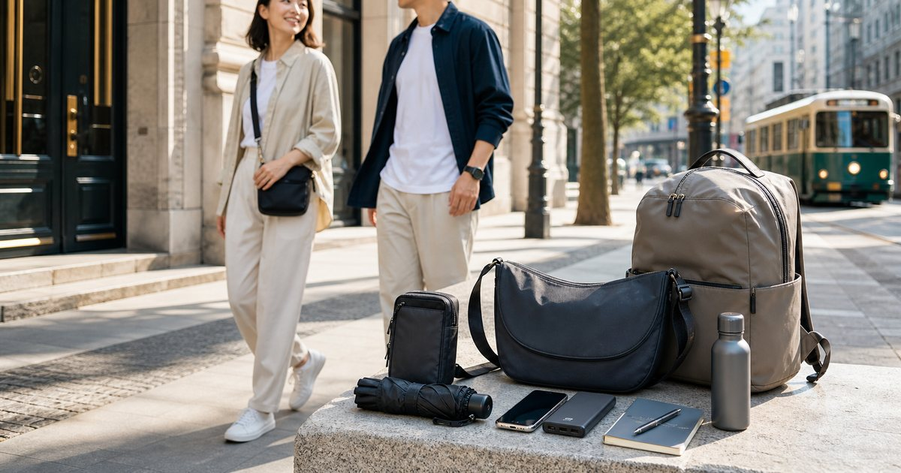

旅行斜背包與防盜小包：一日城市旅行的包款配置
城市旅行的包款重點不是全都塞進同一個包，而是把證件、手機、充電、外套與購物物品分層。斜背包、防盜小包與輕量後背包各有任務。

城市旅行要先分成貼身、快取與備用三層
旅行包款最穩的配置，不是找一個萬能包，而是分層。貼身層放護照、錢包、手機；快取層放交通卡、耳機、行動電源；備用層放外套、水瓶、雨傘與購物袋。
UD LAB 適合偏快取、輕量與戶外城市感的斜背或小包；S′AIME 東京企劃適合在照片、餐廳與城市穿搭間維持完整度；Heine 海恩後背包則可處理需要更多容量的一日行程。
城市旅行的包款配置，最怕所有東西都塞進同一個漂亮小包。證件、現金、手機、行動電源、薄外套和雨具的安全等級不同，拿取頻率也不同，分層比單純縮小體積更重要。
- 貼身層：證件、手機、錢包。
- 快取層：交通卡、耳機、行動電源。
- 備用層：水瓶、外套、雨傘、購物袋。
斜背包適合快取，不適合承擔全部重量
斜背包的優點是好拿、好看、好進出車站與商店，但它不適合承受整天的重物。若你把水瓶、相機、外套和戰利品都塞進同一個斜背包，肩膀很快就會提醒你配置錯了。
S′AIME 的包款適合處理穿搭與城市感；UD LAB 更適合快扣、貼身與輕機能需求。選斜背包時，要先看開口、安全感、肩帶寬度和是否貼身，而不是只看容量。
- 斜背包放高頻物品，不放整天重物。
- 包口要能快速開合，但也要避免過度外露。
防盜小包的重點是位置，不是神祕機關
防盜概念常被說得很複雜，但最基本的是位置：證件與主要信用卡要靠近身體，不要放在背後外袋；手機和交通卡需要快取，但也不能一直露在手上。
如果你不想多買專門防盜包，也可以用包中袋、內層拉鍊袋或貼身小包達到類似分工。KANGOL、SPRING 包包和 UD LAB 的小包，都可以依正式度與場景補位。
防盜設計不一定要看起來像戶外裝備。拉鍊方向、包口位置、背在身體前側是否順手、手機是否會露出邊角，這些細節都能讓你在陌生街區少一點分心。
- 重要物品靠身體內側，不放外層背面。
- 常用卡可單獨放，不要每次都打開主錢包。
輕量後背包負責外套、水瓶與購物量
城市旅行常常從輕裝出門，下午開始多了咖啡豆、書、衣服、伴手禮和濕傘。這時候如果沒有備用容量，小包就會被塞到變形。
Heine 海恩後背包或其他輕量後背選項，適合當作外層容量；斜背包則保留給重要物品與快取。這樣你在商店、車站、餐廳之間切換時，不必一直把整個包翻開。
- 後背包放低頻但有體積的物品。
- 斜背包放證件、手機與錢包。
雨天、夜間與拍照場景要預留轉換空間
城市旅行常常會遇到突發雨、夜間散步或臨時拍照。包款如果完全沒有空位，傘、外套、行動電源和補妝小物就會互相擠壓，最後不是找不到，就是弄濕。
包款配置要預留 20% 空間給變動，而不是出門時就塞滿。若你會拍照，可以把小相機、手機支架或濾鏡另放小袋，不要和水瓶、濕傘放在同一層。
如果行程含餐廳、展覽或飯店大廳，包款的輪廓會影響整體儀態。太軟的包容易顯得臨時，太硬的包又可能不適合走整天，最理想的是介於挺度與輕便之間。
- 出門時不要裝滿，留給購物與天氣變化。
- 濕傘、外套與電子用品分層。
最穩的配置是一個主包加一個貼身小包
一日城市旅行最舒服的配置，通常是一個主包加一個貼身小包。主包負責容量，貼身小包負責安全感與快取；不需要每次都背兩個大包，也不必期待一個小包完成全部任務。
如果你重視穿搭完整度，讓 S′AIME 或 SPRING 負責外觀；如果你重視快取與機能，讓 UD LAB 或 KANGOL 補位；如果你需要容量，就用 Heine 後背包承擔外套與購物量。
回程整理時可以把沒有用到的物品移出清單，把反覆翻找的東西調到外層。旅行包不是一次買定，而是經過幾次城市移動後，逐漸調成自己的節奏。
這種配置的好處，是讓行程中的每一次停留都更從容。
- 主包負責重量，小包負責重要物品。
- 短程旅行先測試一天，再決定是否升級更完整包款。
FAQ
城市旅行一定要防盜包嗎？
不一定。更重要的是物品位置與使用習慣：重要證件靠近身體、常用卡分開、不要在擁擠處頻繁翻找主錢包。
斜背包可以放水瓶和外套嗎？
可以，但不一定舒服。若行程超過半天，建議讓水瓶、外套和雨傘放在主包或後背包，斜背包保留給快取物品。
一日城市旅行要帶幾個包？
最常見也穩定的是一個主包加一個貼身小包。主包處理容量，貼身小包處理證件、手機和錢包。
下一步建議
如果你準備城市旅行，先把貼身、快取與備用三層分開，再決定斜背包和主包的組合。
重要警語
本文為一般穿搭與選購情境整理，不構成醫療、安全或專業保管建議。包款、防曬、雨具與旅行用品仍需依你的交通方式、使用頻率、收納需求與商品頁規格評估；價格、活動與庫存請以商品頁公告為準。
本文含品牌／商品導購連結；若你透過部分商品連結前往選購，Elite Fashion 可能取得合作收益。本文仍以編輯判斷與使用情境整理為主，價格、規格、活動與庫存請以商品頁公告為準。